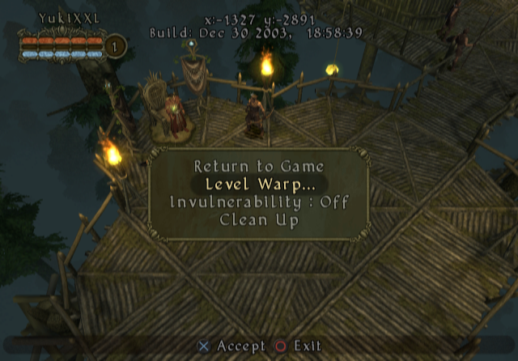
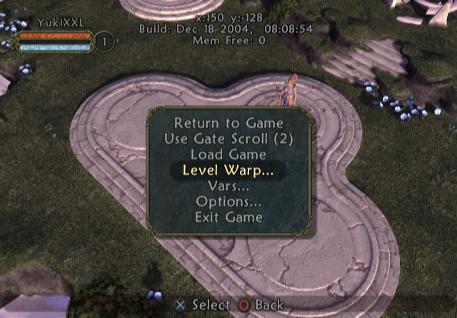
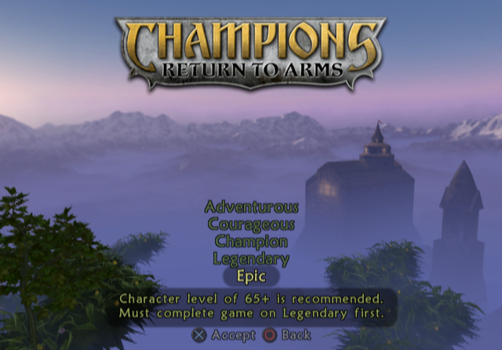
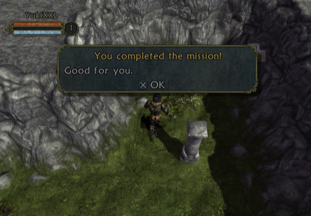

The codes are available in .pnach files for use with PCSX2 Emulator.
Cheat codes need to be renamed into (GAME_CRC).pnach. PCSX2 can read multiple .pnach files of the same CRC and with line added so you can have multiple .pnach's in the same game. To do it, simply add a line at the end (ex. CRC-something.pnach).
Guide for using PNACHIf you need the cheat codes in RAW format, simply do these steps:
1. Use "Find and Replace" to replace the lines "patch=1,EE," with "" (aka. NOTHING).
2. Repeat for the lines "//".
3. Replace the lines ",extended," with " " (aka. SPACEBAR).
If you want to convert the codes into format of your Cheat Device (Action Replay, Codebreaker, Gameshark, etc.), you will need the Omniconvert app.
If you wish to download the PNACH but it constantly opens as the text file, use the "Right Click > Save Link As ..." trick.
- Final Release (NTSC-U) = 90E66BC5.pnach
- Final Release (PAL-E) = 75D86958.pnach
- Demo (NTSC-U) = 7656425F.pnach
- Beta Build (NTSC-U) = 3A0AC55E.pnach
Needed for the real hardware.
Disables interlacing.
It enables the usage of debug menus and stuff.
- Usage:
D-Pad Down + R1 = Level up
L2 + R2 + Start = Debug menu
Increases the Champion difficulty. For those who want a little harder :)
Unlocks all difficulties.
It enables the usage of debug menus and stuff.
- Usage:
D-Pad Down + R1 = Level up
L2 + R2 + Start = Debug menu
Drops to game mode selection after selecting "Start a New Game" instead of immediately starting a game.
Don't immediately start the game after selecting "Start a New Game" and instead act like as a "Final Release".
Since saving isn't possible, this unlocks all difficulties.
Enables selecting the characters which are not available in the demo. Due to their models missing, the game freezes on loading.
- Final Release (NTSC-U) = 4028A55F.pnach
- Final Release (PAL-E) = 5C64E73A.pnach
- Demo (NTSC-U) = 7B564230.pnach
- Alpha (26 Jul 2004) (NTSC-U) = 791BD48B.pnach
Disables interlacing.
It enables the usage of debug menus and stuff.
- Usage:
D-Pad Down + R1 = Level up
L2 + R2 + Start = Debug menu
Emulates the LAN mode that is presented in Alpha build.
Increases the selected difficulty. This was made for cut difficulty from Alpha/Demo called "Epic".
Unlocks all difficulties.
It enables the usage of debug menus and stuff.
- Usage:
D-Pad Down + R1 = Level up
L2 + R2 + Start = Debug menu
Drops to game mode selection after selecting "Start a New Game" instead of immediately starting a game.
Don't immediately start the game after selecting "Start a New Game" and instead act like as a "Final Release".
Enables difficulty select when playing offline.
Enables selecting the characters which are not available in the demo. Due to their models missing, the game freezes on loading.
Extands the demo time to last 40 minutes.
Disables the demo to end. So once it reaches 0 seconds, it will start counting into minus.
Disables the demo countdown.
It enables the usage of debug menus and stuff.
- Usage:
D-Pad Down + R1 = Level up
L2 + R2 + Start = Debug menu
Enables difficulty select when playing offline.
The level "tormentc" isn't presented in the game files and thus makes the game crash upon loading it.
There are 3 different codes for a replacement:
torment0 = A small map without a teleporter or exit and the only interesting thing is a small "fire holder" thingy with a message saying "The Turtle is your friend".
torment1 = A very small map with a teleporter and a checkpoint, two boxes, and one pillar where if stepped, it gives a message:
You completed the mission!
Good for you.
torbonus = An unfinished Plane of Torment: Bonus Level. No doors, bad lighting and no enemies or anything. Only a map layout with some lights.